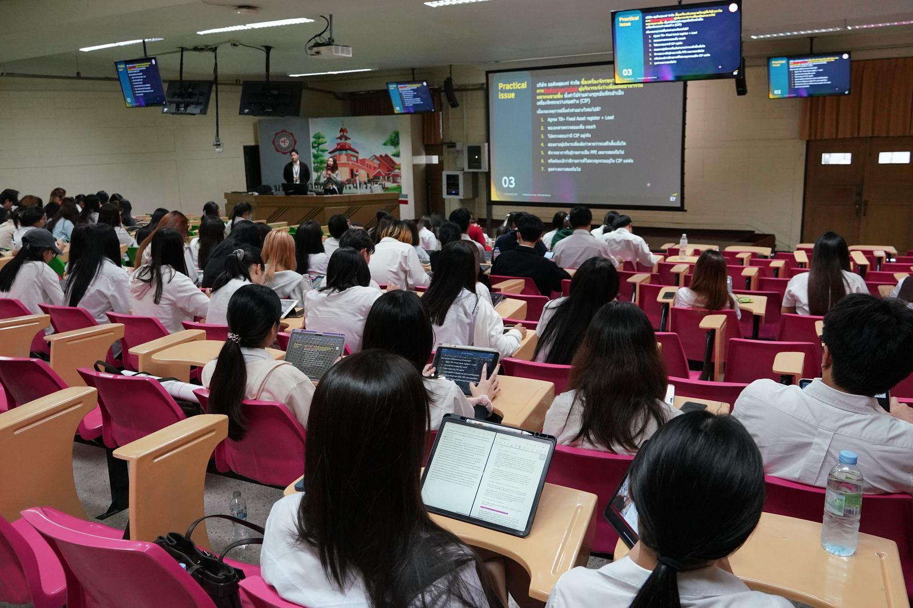

Academics & Research
Academics & Research
วิชาการและวิจัย
มาตรฐานการเรียนการสอน การประกันคุณภาพ ความร่วมมือทางวิชาการ และข้อมูลสำหรับการวางแผนการศึกษา
Overview
What We Do
งานวิชาการของคณะ
คณะดูแลคุณภาพการเรียนการสอนผ่านสามเสาหลัก — การรับรองสมรรถนะอาจารย์ การประกันคุณภาพตามเกณฑ์สากล และเครือข่ายความร่วมมือกับหน่วยงานภายนอก
Teaching Competency
การรับรองสมรรถนะอาจารย์
อาจารย์และบุคลากรได้รับการรับรองตามกรอบมาตรฐานวิชาชีพของสหราชอาณาจักรแล้ว 18 คน
ดูรายละเอียด QAQuality Assurance
ประกันคุณภาพการศึกษา
ประเมินคุณภาพสามระดับ TQF · EdPEx · AUN-QA
ระบบประกันคุณภาพ MOUAcademic Collaboration
ความร่วมมือทางวิชาการ
ข้อตกลงกับสถาบันการศึกษา หน่วยงานรัฐ และภาคเอกชน ทั้งในและต่างประเทศ
ดูรายชื่อพันธมิตร 2569Academic Calendar
ปฏิทินการศึกษา
กำหนดการเปิด-ปิดภาคเรียน ลงทะเบียน และสอบ ทุกระดับการศึกษา
เปิดปฏิทินTeaching Competency Recognition
UK Professional Standards Framework
การรับรองสมรรถนะอาจารย์ UKPSF
18บุคลากรที่ได้รับการรับรอง
-
1
Senior Fellow
SFHEAผู้นำด้านการเรียนการสอนที่มีผลต่อผู้อื่นในวงกว้าง
-
15
Fellow
FHEAอาจารย์ที่รับผิดชอบการสอนและสนับสนุนการเรียนรู้อย่างเต็มรูปแบบ
-
2
Associate Fellow
AFHEAผู้เริ่มมีบทบาทด้านการสอนและสนับสนุนการเรียนรู้
External Resources
Systems & Resources
ระบบและเอกสารที่เกี่ยวข้อง